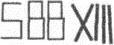

26. BÖLÜM
Sato, “Profesor Langdon?” diye sordu. “Hayalet görmüş gibisiniz. İyi misiniz?”
Langdon taşıdığı küp şeklindeki paketi sanki daha iyi saklayacakmış gibi, omzundaki çantayı iyice yukarı çekti ve elini üstüne koydu. Yüzünün kül rengine döndüğünü hissedebiliyordu. “Ben.. Peter için endişeleniyorum.”
Başını uzatan Sato, ona yan gözle baktı.
Langdon birden, Sato’nun bu akşam belirmesinin sebebinin, Solomon’ın kendisine emanet ettiği küçük paketle ilgisi olabileceği izlenimine kapıldı. Peter, Langdon’ı uyarmıştı: Bunu çalmak isteyen güçlü kişiler var. Yanlış ellerde tehlikeli olur. Langdon tılsım içeren küçük bir kutuyu CIA’in neden isteyebileceğini... veya bu tılsımın ne olduğunu tahmin edemiyordu. Ordo ab chao?
Siyah gözleriyle onu inceleyen Sato, yaklaşarak bir adım attı. “Galiba aklınıza bir şey geldi?”
Langdon artık terlediğini hissediyordu. “Hayır, pek sayılmaz.”
“Aklınızdan ne geçiyor?”
“Ben sadece...” Ne diyeceğini bilemeyen Langdon tereddüt etti. Çantasındaki paketin varlığını açıklamaya niyeti yoktu ama Sato onu CIA’e götürürse, içeri girerken çantası mutlaka aranacaktı. “Aslında,” diye yalan söyledi. “Peter’ın elindeki sayılarla ilgili başka bir fikrim var.”
Sato’nun ifadesinden hiçbir şey anlaşılmıyordu. “Evet?” Sonunda varmış olan adli tıp ekibini karşılamaktan dönen Anderson’a bir göz attı.
Güçlükle yutkunan Langdon, onlara ne söyleyebileceğini düşünürken elin yanında çömeldi. Sen bir öğretmensin Robert, uyduruver! İlham gelmesi umuduyla, yedi küçük sembole son bir kez daha baktı.
Hiçbir şey. Anlamsız.
Langdon’ın fotografik belleği zihnindeki semboller ansiklopedisini araştırırken, aklına tek bir açıklama geldi. Aslında bunu daha ilk başta düşünmüş ama imkân vermemişti. Ama şu anda düşünmek için zaman kazanması gerekiyordu.
“Şey...” diye başladı. “Bir simgebilim uzmanının sembollerle şifreleri çözerken yanlış yolda olduğunun ilk göstergesi, farklı sembolik dilleri bir arada kullanmasıdır. Mesela ben size bunun Romen ve Arap rakamlarından oluştuğunu söyler ve farklı sembolik dilleri bir arada kullanırsam yanlış bir tahlil yapmış olurum. Aynı şey Romen ve Runik için de geçerli.”
Sato “devam et” der gibi kollarını kavuşturup, kaşlarını yukarıya kaldırdı.
“Genelde iletişim çoklu değil tek bir dilde kurulur, bu yüzden bir simgebilim uzmanının ilk işi, tüm metne uygulanacak tek bir sembolik sistem bulmaktır.”
“Peki şimdi tek bir sembolik sistem görüyor musunuz?”
“Şey, evet... ve hayır.” Ambigramların dönüşlü simetrileriyle ilgili tecrübeleri, ona sembollerin bazen farklı açılardan anlam ifade ettiklerini öğretmişti. Şimdiki durumdaysa, yedi sembolün hepsini birden tek bir dilde görmenin bir yolu olduğunu fark etmişti. “Eğer eli biraz hareket ettirirsek, lisan birbiriyle uyumlu olacaktır.” Langdon’ın aklına gelen döndürme hareketi, ürkütücü bir şekilde Peter’ı alıkoyan kişinin söylediği Hermetik vecizede de vardı. Aşağıdaki yukarıdakine, yukarıdaki aşağıdakine benzer.
Langdon uzanıp, Peter’ın elinin takılı durduğu tahta tabanı kavrarken, içinin ürperdiğini hissetti. Peter’ın dik duran parmakları aşağıya bakacak şekilde, kaideyi nazikçe baş aşağı çevirdi. Avuç içindeki semboller o anda değiştiler.
Langdon, “Bu açıdan bakıldığında X-I-I-I geçerli bir Romen rakamıdır, yani on üç,” dedi.

“Bununla birlikte, geri kalan karakterler de Romen alfabesi kullanılarak yorumlanabiliyor, yani SBB.” Langdon yaptığı tahlilin boş bakışlara sebep olacağını sanmıştı ama Anderson’ın ifadesi hemen değişti.
Şef, “SBB mi?” diye sordu.
Sato, Anderson’a döndü. “Yanlış hatırlamıyorsam burada, Kongre Binası’ndaki bir numaralandırma sistemi olmalı.”
Anderson’ın rengi solmuştu. “Öyle.”
Sato tatsızca gülümseyip, Anderson’a başını salladı. “Şef, beni takip edin lütfen. Sizinle özel olarak konuşmak istiyorum.”
Başkan Sato, Anderson’ı duyulmayacaktan bir noktaya götürürken, Langdon hayretler içinde bekledi. Burada ne halt oluyor? SBBXIII de ne?
Şef Anderson bu akşamın bundan daha ilginç olamayacağını düşünüyordu. El, SBB13 mü diyor? Dışarıdan birinin SBB13 bir yana, SBB’yi duymuş olmasına bile şaşırmıştı. Anlaşılan Peter Solomon’ın eli görüldüğü gibi yukarıyı değil... tam tersindeki bir yeri işaret ediyordu.
Başkan Sato, Anderson’ı, Thomas Jefferson’ın bronz heykelinin yanındaki tenha bir bölgeye götürdü. “Şef,” dedi. “SBB13’ün yerini bildiğinden eminim.”
“Elbette.”
“İçeride ne olduğunu biliyor musun?”
“Hayır, bakmadan bilemem. Yıllardır kullanıldığını bile sanmıyorum.” “İyi, şimdi açacaksın.”
Anderson kendi binasında ne yapacağının söylenmesinden hoşlanmamıştı. “Efendim, bu sorun yaratabilir. İlk önce görev listesini kontrol etmeliyim. Bildiğiniz gibi aşağı katlar özel ofis veya depo olarak kullanılırlar ve bu odalarla ilgili özel güvenlik protokolü...”
Sato, “SBB13’ü bana açacaksın,” dedi. “Yoksa Güvenlik Ofisi’ni arar, koçbaşıyla bir ekip göndermelerini söylerim.”
Anderson uzunca bir süre ona baktıktan sonra telsizini çıkarıp, dudaklarına götürdü. “Anderson konuşuyor. SBB’yi açacak birini gönderin. Beş dakika sonra benimle orada buluşsun.”
Cevap veren sesin aklı karışmış gibiydi. “Şef, SBB dediğinizi teyit eder misiniz?”
“Doğru. Hemen birini gönderin. Bir de fener gerekecek.” Telsizini yerine yerleştirdi. Anderson’ın kalbi yerinden çıkacakmış gibi çarparken, Sato yaklaştı ve iyice fısıldayarak konuştu.
“Şef, vakit kısıtlı,” dedi. “Bizi aşağıdaki SBB13’e mümkün olduğunca çabuk indirmeni istiyorum.”
“Peki efendim.”
“Senden başka bir şey daha isteyeceğim.”
Haneye tecavüzden başka mı? Anderson karşı çıkacak konumda değildi ama Peter’ın eli Rotunda’da ortaya çıktıktan dakikalar sonra Sato’nun geldiğini de göz ardı etmiyordu. Şimdiyse müdür, pozisyonunu Kongre Binası’nın özel bölümlerine geçmek için kullanıyordu. Bu akşam şimdiye kadar sergiledikleriyle hep bir adım önde gitmişti.
Sato salonun karşı tarafında duran profesörü gösterdi. “Langdon’ın omzundaki spor çanta.”
Anderson bir göz attı. “Ne olmuş?”
“Sanırım Langdon binaya girerken görevliler kontrolden geçirmişlerdir.”
“Tabii ki. Tüm çantalar taramadan geçirilirler.”
“Filmini görmek istiyorum. O çantanın içinde ne olduğunu bilmek istiyorum.”
Anderson, Langdon’ın akşam boyunca yanında taşıdığı çantaya baktı. “Ama... sorsak daha kolay olmaz mı?”
“İsteğimin neresi anlaşılmadı?”
Anderson yeniden telsizini çıkararak, Sato’nun isteğini yerine getirdi. Sato, ona BlackBerry adresini verip, ekibindekiler filmi bulur bulmaz dijital kopyasını e-postayla göndermelerini söyledi. Anderson istemeden de olsa boyun eğdi.
Adli tıptakiler şimdi kesilmiş eli Kongre Binası polisine teslim edeceklerdi ama Sato onlara doğrudan Langley’deki ekibine göndermelerini emretti. Anderson artık itiraz etmekten yorulmuştu. Minik bir Japon buharlı silindiri tarafından yenilgiye uğratılmıştı.
Sato adli tıptakilere, “Ve o yüzüğü de istiyorum,” diye seslendi.
Şef teknisyen bu isteği sorgulayacak olduysa da sonradan bunu yapmamanın daha iyi olacağına karar verdi. Altın yüzüğü Peter’ın parmağından çıkarıp, şeffaf bir delil torbasına koydu ve Sato’ya verdi. Sato yüzüğü cebine attıktan sonra Langdon’a döndü.
“Gidiyoruz profesör. Toparlanın.”
Langdon, “Nereye gidiyoruz?” diye yanıtladı.
“Bay Anderson’ı takip edin.”
Anderson. evet, diye düşündü. Ve beni yakından takip et. SBB, Kongre Binası’nda çok az kişinin ziyaret ettiği bir yerdi. Oraya ulaşmak için minik odalardan meydana gelen uzun bir labirentten ve bodrum katının altındaki dar geçitlerden geçeceklerdi. Bir zamanlar burada kaybolan Abraham Lincoln’ün en küçük oğlu Tad, ölümle burun buruna gelmişti. Anderson, Sato böyle başına buyruk davranmaya devam ederse, Robert Langdon’ı da benzer bir kaderin beklediğini düşünüyordu.